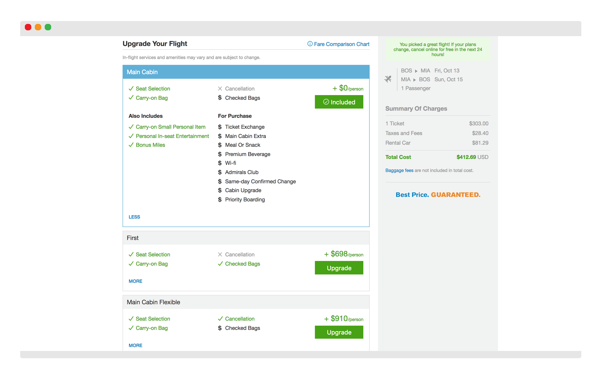
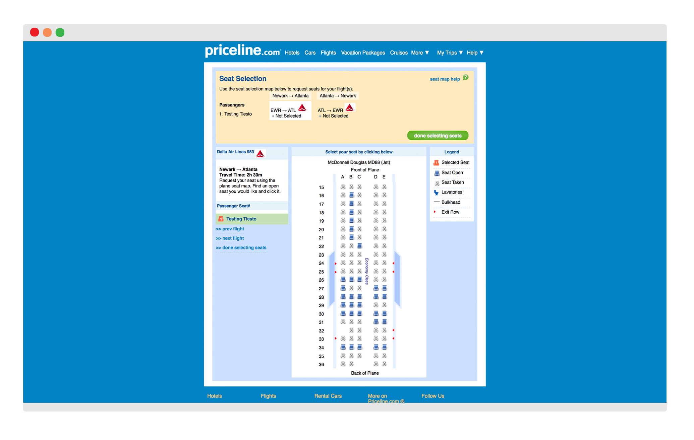
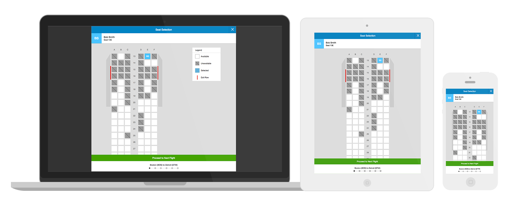

During my time at Priceline.com, my main responsibility was to rapidly develop features given to me by our product designers. Many features on Flights needed revamping or had to start from square one. Having developed a curiosity for design, I was able to fully design or lend my eye on a couple of features.
One feature that our Flights application was lacking was the ability for our users to choose a fare family (or cabin class).
For this module, I decided to go with collapsible buckets so that we could preserve the real estate of the page. It also allows users the ability to compare at a glance or choose which cabins to draw a comparison.

Instead of combining all the amenities into just one category, I reasoned that it would be easier for users to scan if the amenities were separated into their respective statuses ("Also Includes" and "For Purchase").
To indicate a selected fare, it is highlighted with a blue border and the button is used to convey the status of the fare (statuses are "Included", "Added" and "Upgrade").
In an effort to improve the overall Flights experience, one of our customer's pain points was the seat selection experience. Previously, customers were only able to comfortably select seats on desktop.
So up until this redesign, a responsive experience was yet to be created. With mobile in mind, myself and a Priceline designer decided that a simple flat interface with seats depicted as squares would best fit the customers' needs. The intention here was to provide a cleaner user interface that would work cross-platform.
